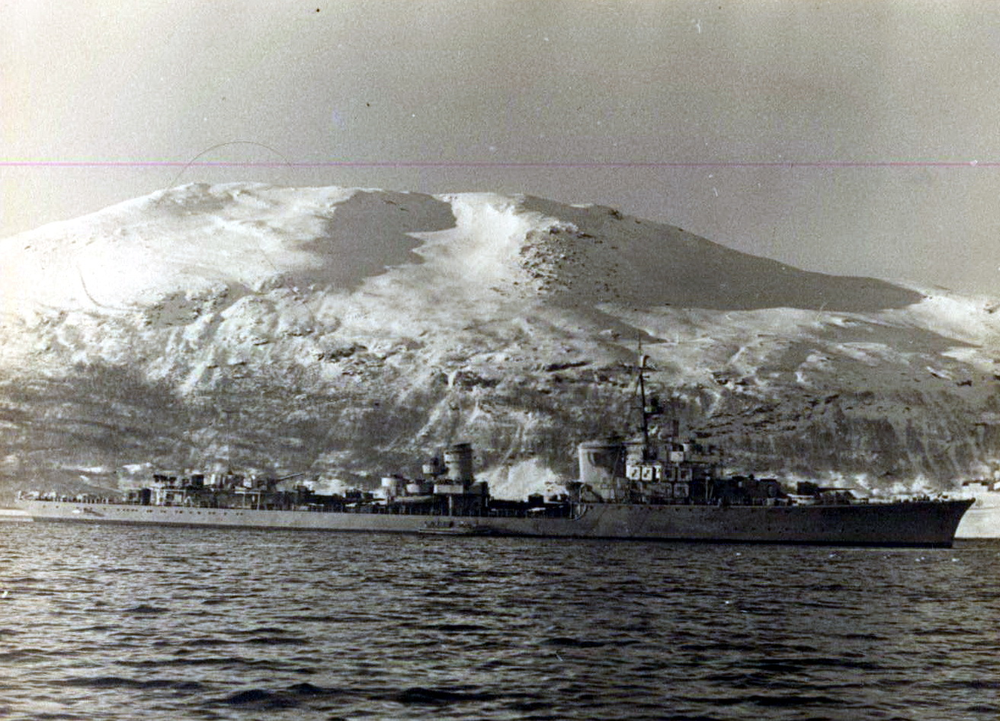

| Spesifikasi | Detail |
|---|---|
| Jenis | Kapal Perusak |
| Tonase Standar | 2.590 ton |
| Tonase Penuh | 3.605 ton |
| Panjang | 127 m (416 ft 8 in) secara keseluruhan |
| Lebar | 12 m (39 ft 4 in) |
| Draf | 4,62 m (15 ft 2 in) pada beban penuh |
| Propulsi | 6 x ketel uap Wagner, 2 x turbin uap Brown, Boveri & Cie, 2 x poros baling-baling |
| Tenaga | 70.000 shp (52.000 kW) |
| Kecepatan Maksimum | 36 knot (67 km/jam; 41 mph) |
| Jarak Jelajah | 2.900 mil laut (5.400 km) pada 19 knot (35 km/jam) |
| Awak | 321 - 332 orang |
| Persenjataan Utama | 4 x meriam 15 cm (5.9 in) TbtsK C/36 (4 x 1) |
| Persenjataan Sekunder | 4 x meriam 3.7 cm (1.5 in) SK C/30 (2 x 2) 7 x meriam 2 cm (0.79 in) Flak 30 atau Flakvierling 38 (jumlah bervariasi) |
| Torpedo Tubes | 8 x tabung torpedo 53.3 cm (21 in) (2 x 4) |
| Peledak Kedalaman | 4 x peluncur peledak kedalaman, rel untuk ranjau |
| Ranjau | Hingga 60 ranjau |
| Sistem Sonar | Berbagai jenis hidrofon dan sonar (kemudian dipasang) |
| Radar | Kemudian dilengkapi dengan berbagai jenis radar seperti FuMO 24 atau FuMO 25 |
| Tanggal Diluncurkan | 16 Maret 1940 |
| Nasib | Ditenggelamkan oleh pesawat Sekutu pada 8 Juni 1944 di dekat Brest |